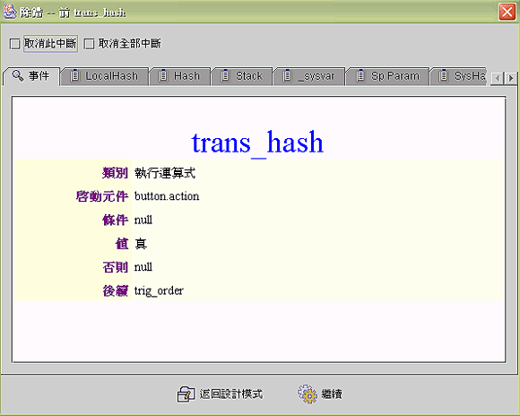

|
6.5 視窗除錯與事件中斷 (form debug and event interrupt) 除錯資料作業視窗 (debug information panel)
jLIVE
Builder™ 是以物件導向 (OOP) 和事件驅動 (event-driven)
作為應用程式設計的核心概念 (core concept)，物件 (object)
與事件 (event) 已經過 jLIVE Builder™ 的內部除錯處理 (bug free)，應用程式設計的錯誤，會出現在事件的流程
(event route)、系統參數 (system variables)、運算與傳遞資料
(computed
and transferred data)。因此 jLIVE Builder™
在視窗設計階段，提供事件中斷 (event interrupt)
顯示系統參數、運算與傳遞資料，設計師可以檢視或修改執行的資料，並決定繼續測試執行
(continue) 或返回設計模式 (back to design mode)。 設計師可以在事件流程綱要 (event flow schema) 中，設定執行事件前後的中斷點 (interrupt)；測試執行期，可以暫時取消該事件或所有的中斷點，以利除錯作業的進行。所有設定的事件中斷，在離開視窗設計返回主控制面版 (control panel) 後，系統會消除不作任何存檔記錄。
除錯資料作業視窗 (debug information panel)

Copyright © 2001~ 2004 Probe Technology . All Rights Reserved. Questions, comments, and suggestions to Service@probe.com.tw |